A Lewis structure, also referred to as Lewis dot structures or simply dot structures, provide us with a way of predicting the general bonding and 2d orientation of a molecule. Up until now we've only looked at bonding between atoms. How can we predict the entire bonding arrangement of a molecule?
A Lewis structure is a 2d representation of molecules revolving around electrons and satisfying valency. There are a couple assumptions we make in Lewis structures:
Each bond consists of 2 shared valence electrons.
Only valence electrons are involved in bonding.
The most electronegative atom will be near the center of the molecule.
Atoms will try to satisfy valency via. bonding.
Atoms will try to minimize formal charge (see below section)
With those assumptions, we can predict the bonding of almost every molecule out there!
Before we begin with Lewis structures, we have to discuss formal charge. The assumption behind formal charge is that atoms, in the process of satisfying valency, may end up with more electrons than would have by themselves. We call this the formal charge of the atom, which is represented by a number above the atom. The significant of the formal charge is that it takes away the emphasis of bond polarity. We learned in the previous sections that bonds usually contain a dipole moment where electrons in the bond are oriented closer to the more electronegative atom. By taking away this concept and idealizing bonds as equal sharings of electrons, we can determine the number of electrons that an atom "owns." Even though an atom has satisfied valency, it can still have a formal charge because formal charge indicates how many electrons are belonging to that atom. In other words, an atom with satisfied valency may have access to 8 electrons, but may want to own more electrons for itself.
Electrons in the formal charge calculation are counted differently than electrons are in valency. In calculating formal charge, each bond counts as one electron. This is because formal charge looks at the charge of the individual atom and whether or not that atom has effectively gained or lost electrons. Formal charge (Q) is calculated as such:
There are two general rules for formal charges:
Atoms like to minimize formal charge if possible. A formal charge that's too high or too low is very unlikely to exist.
The total formal charge of the constituent atoms must be equal to the overall charge of the molecule. For example, `CH_4` must have a total formal charge of 0, since there's no charge on the `CH_4` molecule. For `NH_4^+`, the total formal charge must be equal to +1.
For example, let's calculate the formal charges of the atoms in this atom. We haven't formally discussed Lewis structures yet (they're later on in this post), so it may help to come back to this section while you're going through the next post. Nonetheless, just know that each straight line is a bond and each dot is an electron.
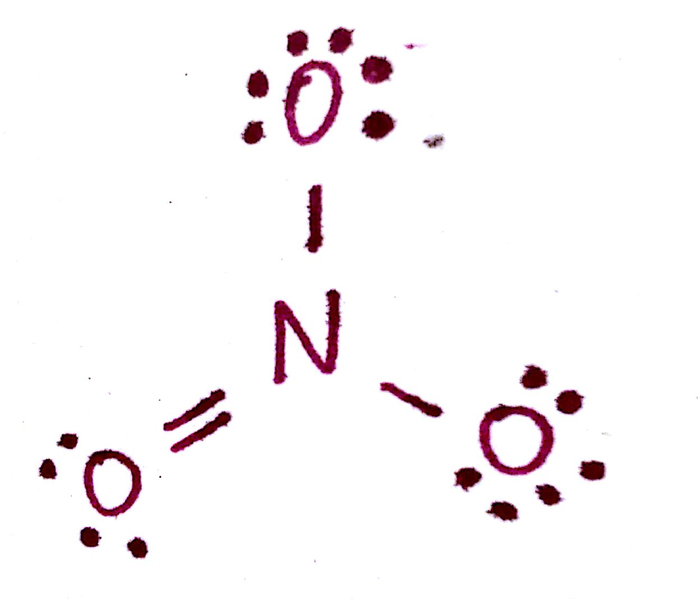First, notice that the octets are satisfied for each of the atoms. The formal charge for N is calculated as such:
This means that the formal charge of N is +1. In other words, even though N has a fulfilled octet, its overall charge is +1. You can think of it this way: Nitrogen has access to 8 electrons but in reality only "owns" 4 of those electrons. Since N by itself has 5 electrons, it has effectively lost one electron, leaving it with a +1 charge. Even though N now has a filled valence shell, it had to share 1 electron in order to get there. That is what the formal charge indicates. Now let's do the formal charge calculations for the 2 O atoms with single bonds:
And finally, the formal charge of the O with a double bond:
This is why you'll find O double bonded most of the time, as opposed to single bonded.
In total, the molecule has a formal charge of -1: +1 from the N and 2(-1) from the two single bonded O. This corresponds to the negative charge in the molecule itself. Remember that The total formal charge must be equal to the charge on the molecule.
We have to consider these formal charges in the structure of this molecule. All formal charges must be displayed on the molecule: The correct structure for the `NO_3^-` molecule is therefore
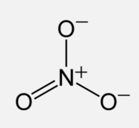Here are a couple practice problems.
Determine the formal charge of each of the atoms.
`Q_C = 4-(3 "bonds")-(2 e^-)=-1`
`Q_O = 6-(3 "bonds")-(2 e^-)=+1`
`Q_C = 4-(4 "bonds")-(0 e^-)=0`
`Q_(N "center") = 5-(4 "bonds")-(0 e^-)=+1`
`Q_(N "right") = 5-(2 "bonds")-(4 e^-)=-1`
`Q_C = 4-(3 "bonds")-(0 e^-)=+1`
`Q_N = 5-(3 "bonds")-(2 e^-)=0`
`Q_O = 6-(1 "bond")-(6 e^-)=-1`
`Q_(Cl) = 7-(7 "bonds")-(0 e^-)=0`
`Q_((O "single-bond")) = 6-(2 "bonds")-(4 e^-)=0`
`Q_((O "double-bond")) = 6-(1 "bonds")-(6 e^-)=-1`
One thing we do have to note are exceptions to the octet rule. It turns out that the octet rule is a great general rule, but is broken more times than not. One example that we've come across is the duet rule for H, where H only needs 2 electrons to satisfy valency.
H only needs 2 electrons.
Be only needs 4 electrons.
B only needs 6 electrons.
If you'll recall, elements with principle quantum number n=4 have access to the 3d orbitals. It turns out P, phosphorus, and all elements following have access to the d-orbitals and therefore have an expanded octet. This is because those elements all have access to the d-orbitals which, while not contributing to valency, provide empty orbitals for electrons to be stored in. In other words, these elements are satisfied with 8 electrons, but can usually be found with more than 8 electrons.
Consider this for a second: the compound `PCl_5` exists in nature whereas `NCl_5` does not. Both are group 5 elements, so how can this be? If you look at the structure of `PCl_5`, you'll notice that there are 5 P-Cl bonds. Since each bond contains 2 electrons, this means that the P atom has 10 electrons!
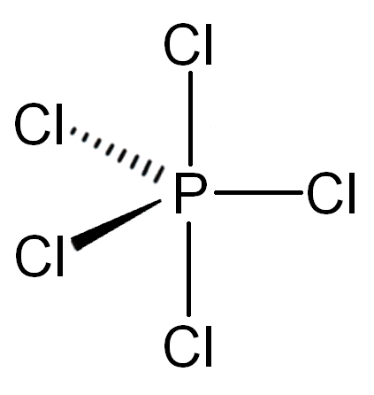This is possible only because P has an expanded octet due to its access to the d-orbitals. N does not have access to any d-orbitals and thus cannot possibly have 10 electrons. It is for this reason that `PCl_5` exists as a molecule whereas `NCl_5` does not.
Additionally, note that the formal charge of P in `PCl_5` is 0. This means that `PCl_5` is actually stable as a compound! You can determine the right number of valence electrons for an atom with an expanded octet by considering its formal charge. An atom with too high or too low of a formal charge is not likely to exist.
In Lewis structures, unbonded electrons , also known as unpaired electrons are represented by dots (where the name comes from) and each bond as as a straight line. Additionally, only valence electrons are counted. Let's learn with an example.
#1. Draw the Lewis dot structure for `NH_3`, ammonia.
We're going to split this up into a few steps to make it more manageable.
a) Determine the total number of valence electrons.
Hopefully this isn't too challenging at this point. N has 5 valence electrons and each H has 1. In total, that is 8 valence electrons
b) Determine the most electronegative atom.
If we look at the periodic table, we can determine the general trend of electronegativity by whichever element is closest to F. In this case, N is closer than F than H is. We can check this by looking at the Pauling Scale, which confirms that N is more electronegative than H is.
c) Place the most electronegative atom in the center, and draw a single bond between that atom and each other atom.
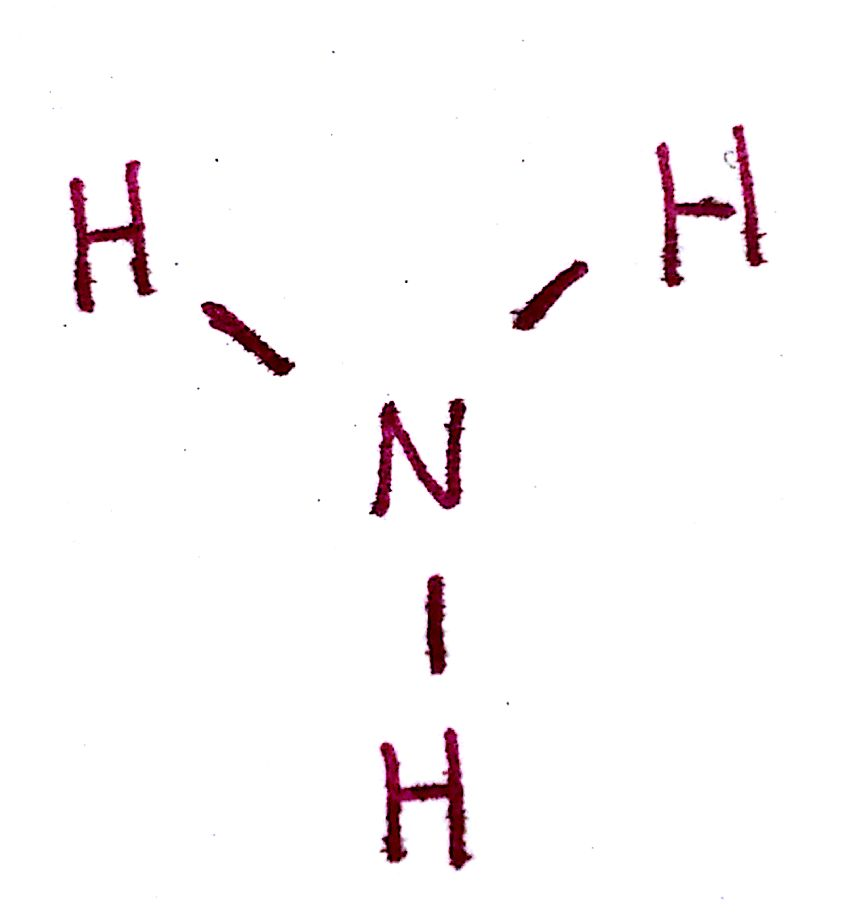d) Distribute the remaining valence electrons throughout the atoms as to satisfy valency, beginning with the most central atoms and ending with the central.
Since the valency of each each outer atom, the Hs, are satisfied, the only electrons remaining go on the N.
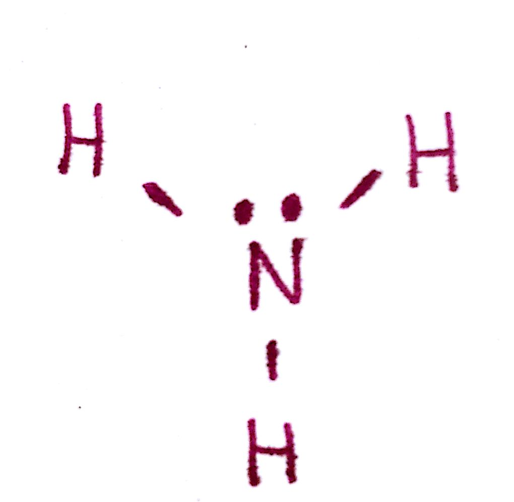e) Count the total number of valence electrons. This should be the same number you started off with.
There are 3 bonds and 2 unpaired electrons. This is a total of 8 electrons, which is the number we started with.
f) Determine the formal charge of each atom. If the formal charges are too high or do not coincide with the charge of the molecule, try another configuration.
The formal charge of each H is 0 and the formal charge of N is 0. This is good because the overall charge of the molecule must be 0.
Congratulations, you've done your first Lewis structure! As you do more, you'll discover that there are complications. Here are a couple of those complications. Here's one with a bit of a complication.
#2. Draw the Lewis structure for `CO_2`, carbon dioxide.
Just like before, we're going to split this up into smaller steps.
a) Determine the total number of valence electrons.
Carbon has 4 valence electrons and Oxygen has 6. The total number of valence electrons is 4 + 2(6) = 16.
b) Determine the most electronegative atom.
Oxygen is clearly the most electronegative element. Unfortunately, oxygen will not be the central atom because if we put oxygen in the center, valency can never be fulfilled (try it yourself). Instead, we're going to put C in the center.
You'll notice over time that molecules that follow the formula `AB_x` usually has A in the center. This is because molecules value symmetry, which is a topic for a later course.
c) Draw a single bond between each outer atom and the central atom.
d) Distribute the remaining valence electrons throughout the atom as to satisfy valency, beginning with the outer atoms and ending with the central.
As you can see, there is a problem here. By satisfying the octet of both oxygen atoms, we've used up all of our electrons and left carbon without a filled octet.
To fix this, note that the carbon is missing a total of 4 electrons. If we create 2 additional C-O bonds, using 2 electrons from each O, we can create 2 C-O double bonds.
e)Count the total number of valence electrons. This should be the same number you started off with.
There are a total of 4 bonds and 8 unpaired electrons. This gives us a total of 16, which is the number we started off with. Great!
f) Determine the formal charge of each atom. If the formal charges are too high or do not coincide with the charge of the molecule, try another configuration.
All of the atoms have formal charges of 0. This is in line with the overall charge of the molecule, which is neutral.
There you have the Lewis structure of `CO_2`!. The complication we had in this problem was that there were enough electrons to fulfill valency with just single bonds. We had to introduce double bonds as a way of sharing more electrons.
Just like with electron configuration, the best way to learn Lewis structures is to do a lot of them After a while, you'll notice some general trends which will greatly simplify them. Here are two more examples.
#3. Draw the Lewis structure for `NO_2^+`.
a) Determine the total number of valence electrons.
N has 5 valence electrons and O has 6. Notice that this molecule has a positive charge however. This indicates that the molecule is missing 1 valence electron. The total number if therefore 5 + 2(6) - 1 = 16.
b) Determine the central atom.
As noted before, molecules with the general formula `AB_x` usually have A in the middle. `NO_2^+` is no exception. N will be the central atom.
c) Draw a single bond between the outer atoms and the central atom.
d) Distribute the remaining valence electrons throughout the atom as to satisfy valency, beginning with the outer atoms and ending with the central.
Just like with `CO_2`, single bonds won't be enough to satisfy valency. We're going to have to introduce double bonds.
e) Count the number of valence electrons.
There are 4 bonds and 8 unpaired electrons. This is a total of 16, same as we started with.
f) Determine the formal charges.
Since the molecule has an overall charge of +1, there must be a formal charge of +1 somewhere in the molecule. The formal charge of both O is 0, and the formal charge of the N is +1. We must indicate this on the molecule.
This is the final structure of `NO_2^+`!
#4. Draw the Lewis structure for `XeO_4`.
Something weird about this molecule is that it's a noble gas compound. Usually noble gases don't react, so this is a pretty cool molecule.
a) Determine the total number of valence electrons.
Xe has 8 valence electrons, each O has 6. The total number is 8 + 4(6) = 32.
b) Determine the central atom.
Molecules with the formula `AB_x` generally have A as the central atom. In this case, Xe is the central atom.
c) Draw a single bond between the outer atoms and the central atom.
d) Distribute the remaining valence electrons throughout the atom as to satisfy valency, beginning with the outer atoms and ending with the central.
e) Count the number of valence electrons.
There are 4 bonds and 12 pairs of unpaired electrons. This is 4(2) + 12(2) = 32. The number of valence electrons has remained constant.
f) Determine the formal charges.
The formal charge on each O atom is -1. The formal charge on Xe is +4. This formal charge is too large for comfort, so we're going to have to rearrange the electrons to minimize this charge.
The only way to completely minimize charge on the Xe is through this following structure. With this structure, Xe now has a formal charge of 0 and each O atom has 0 formal charge. Since Xe has an expanded octet, it is possible for it to accomodate this many electrons.
The purpose of this Lewis structure was to demonstrate the importance of formal charge. Even though the molecule in part d had the correct number of total valence electrons and all valency was fulfilled, the structure was incorrect due to the high formal charge on Xe.
Above all else, Lewis structures are about trial and error. Chances are, your first attempt at a structure will not be correct. Only by doing many problems will you be able to recognize the necessary corrections.
Draw the Lewis structures for the following molecules:
#1. `BeF_2`
#2. `BF_3`
#3. `PBr_5`
#4. `C_6H_6`
#5. `SOCl_2`
#6. `SCN^-`
#7. `C_2H_3N`
#1. 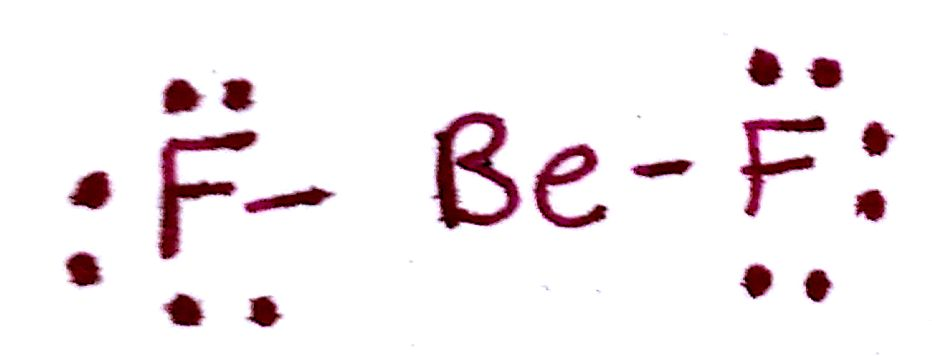
#2. 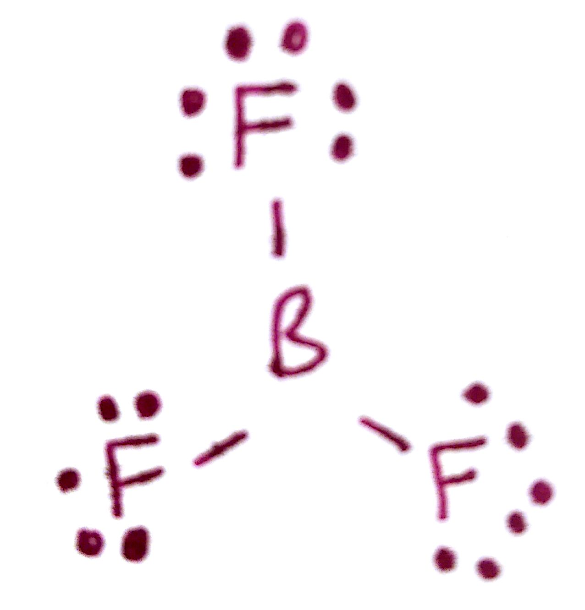
#3. 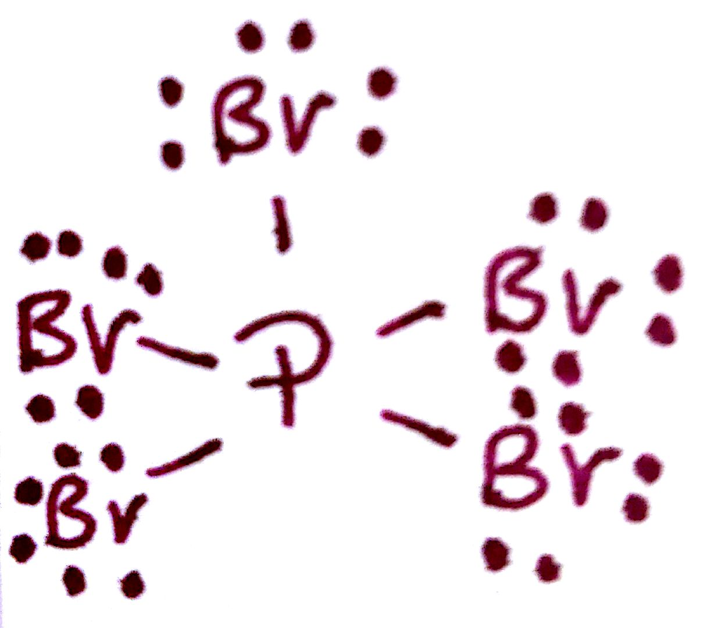
#4. 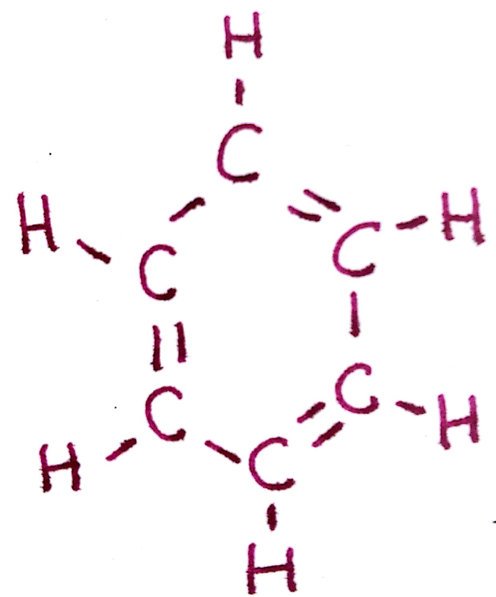
#5. 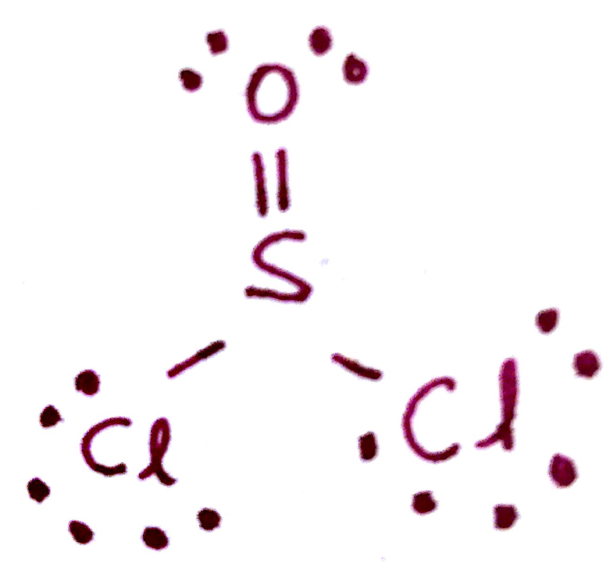
#6. 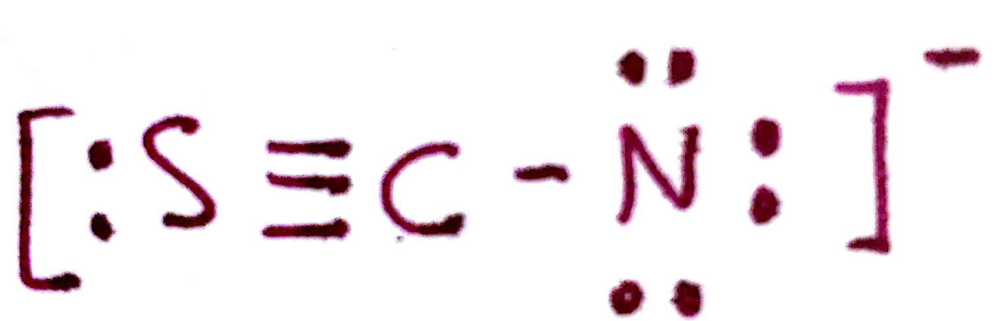
#7. 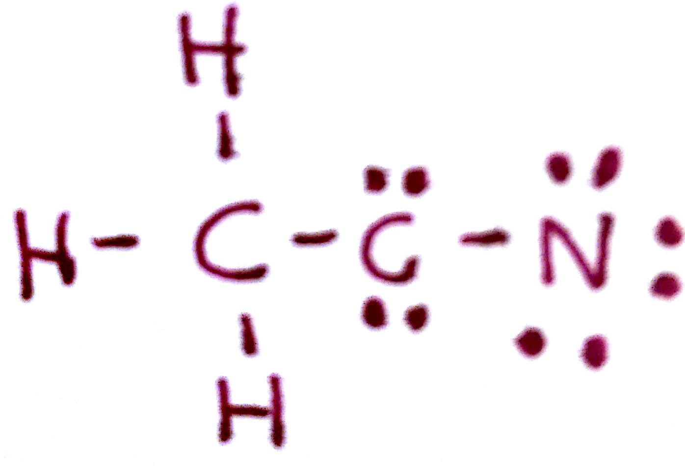